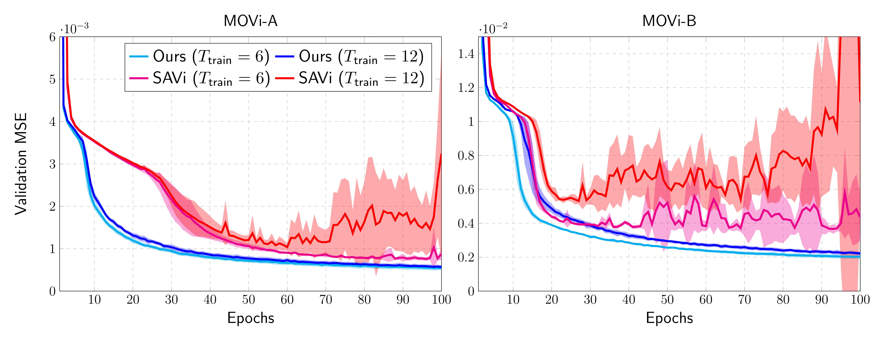
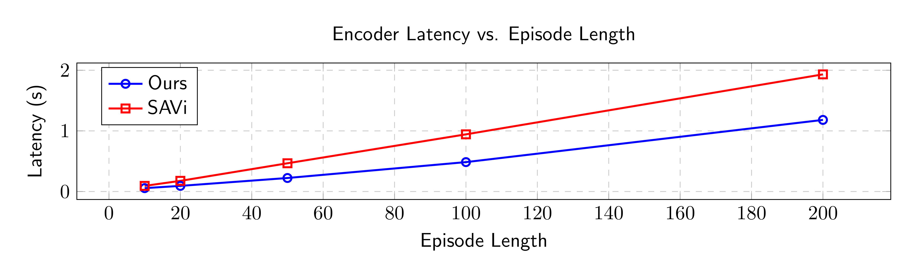
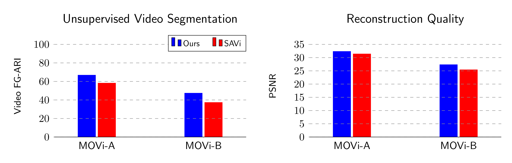
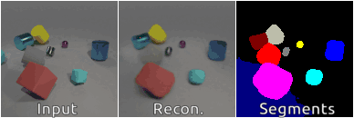
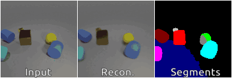

Parallelized Spatiotemporal Binding
Gautam Singh1,5, Yue Wang2,5, Jiawei Yang2, Boris Ivanovic5, Sungjin Ahn†,3, Marco Pavone†,4,5, Tong Che5
1Rutgers University, 2University of Southern California, 3KAIST, 4Stanford University, 5NVIDIA Research
†Equal Advising
Abstract
While modern best practices advocate for scalable architectures that support long-range interactions, object-centric models are yet to fully embrace these architectures. In particular, existing object-centric models for handling sequential inputs, due to their reliance on RNN-based implementation, show poor stability and capacity and are slow to train on long sequences. We introduce Parallelizable Spatiotemporal Binder or PSB, the first temporally-parallelizable slot learning architecture for sequential inputs. Unlike conventional RNN-based approaches, PSB produces object-centric representations, known as slots, for all time-steps in parallel. This is achieved by refining the initial slots across all time-steps through a fixed number of layers equipped with causal attention. By capitalizing on the parallelism induced by our architecture, the proposed model exhibits a significant boost in efficiency. In experiments, we test PSB extensively as an encoder within an auto-encoding framework paired with a wide variety of decoder options. Compared to the state-of-the-art, our architecture demonstrates stable training on longer sequences, achieves parallelization that results in a 60% increase in training speed, and yields performance that is on par with or better on unsupervised 2D and 3D object-centric scene decomposition and understanding.

Figure 1: Conventional Spatiotemporal Binding versus Ours. Left: Conventional object-centric encoders summarize sequential sensory inputs into slots via recurrence, analogous to RNNs. Right: On the other hand, our proposed object-centric encoder achieves this without recurrence, allowing it to be parallelized over the sequence length, similarly to transformers.
Computational Benefits
Benefit 1: Stable Training with Longer Sequences

Figure 2: We compare our proposed encoder with the baseline model SAVi, a recurrent object-centric encoder that is also the current state-of-the-art for learning slots from sequential inputs. We show validation loss curves (mean and standard deviation computed over 5 seeds) for training runs on MOVi-A and MOVi-B following the unsupervised training regime of Kipf et al. 2021. Here, $T_\text{train}$ denotes the length of each training episode. We note that as we increase the episode length from 6 to 12, SAVi becomes highly unstable while our model trains smoothly.
Benefit 2: Faster Training Speed

Figure 3: We report the time taken (in seconds) to perform one training step plotted as a function of the episode length. For our proposed encoder, we observe a speed-up of about 1.6$\times$ over the baseline SAVi.
Application 1: Unsupervised Object-Centric Learning on 2D Videos with Alpha-Mixture Decoder
Improved Quantitative Performance

Figure 4: Unsupervised Object-Centric Learning on MOVi-A and MOVi-B using Spatial Broadcast Decoder. We compare our proposed encoder with the recurrence-based baseline encoder SAVi (Kipf et al. 2021). Left: Video-level FG-ARI score $(\uparrow)$. Right: Reconstruction PSNR $(\uparrow)$.
Qualitative Performance
MOVi-A
 